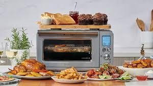
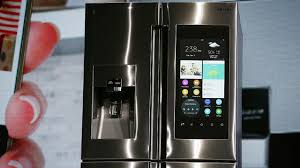
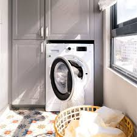
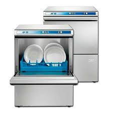
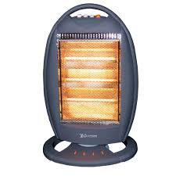

Microprocesadores en Electrodomésticos
Los microprocesadores han revolucionado los electrodomésticos, permitiendo funciones inteligentes como el control de temperatura, temporizadores, eficiencia energética y conectividad. Gracias a ellos, los dispositivos del hogar son más seguros, eficientes y fáciles de usar.

Tipos de Microprocesadores en Electrodomésticos
Microprocesadores en Hornos Inteligentes
Control preciso de temperatura y funciones programables

Características Técnicas:
- Procesadores ARM Cortex-M de 32 bits
- Frecuencia de operación: 48-120 MHz
- Memoria Flash: 64-256 KB
- Convertidores ADC de alta precisión para sensores de temperatura
Aplicaciones:
Control PID para mantener temperaturas precisas, interfaces táctiles, conectividad WiFi para control remoto, y algoritmos de cocción automática basados en el tipo de alimento.
Microprocesadores en Refrigeradores
Control de temperatura y gestión energética eficiente

Características Técnicas:
- Microcontroladores de 8 a 16 bits
- Bajo consumo energético (modos sleep avanzados)
- Memoria Flash: 32-128 KB
- Múltiples interfaces para sensores de temperatura
Aplicaciones:
Control de compresores inverter, gestión de zonas de temperatura independientes, monitoreo de apertura de puertas, y optimización del ciclo de descongelación para ahorrar energía.
Microprocesadores en Lavadoras
Control de ciclos y optimización del consumo de agua

Características Técnicas:
- Microcontroladores de 16 a 32 bits
- Frecuencia de operación: 24-80 MHz
- Memoria Flash: 64-256 KB
- Controladores PWM para motores de velocidad variable
Aplicaciones:
Control de motores inverter, detección de carga y tipo de tejido, ajuste automático de ciclos de lavado, y diagnóstico de fallos con conectividad para mantenimiento remoto.
Microprocesadores en Lavavajillas
Optimización de ciclos de lavado y eficiencia hídrica

Características Técnicas:
- Microcontroladores de 16 bits
- Frecuencia de operación: 16-48 MHz
- Memoria Flash: 32-128 KB
- Interfaces para sensores de turbidez y nivel de agua
Aplicaciones:
Detección de suciedad mediante sensores ópticos, ajuste automático de temperatura y presión de agua, control de bombas de circulación, y sistemas de secado eficientes.
Microprocesadores en Aires Acondicionados
Control de temperatura y eficiencia energética
Características Técnicas:
- Microcontroladores de 32 bits
- Frecuencia de operación: 48-120 MHz
- Memoria Flash: 128-512 KB
- Controladores para compresores inverter de alta eficiencia
Aplicaciones:
Control de velocidad variable del compresor, detección de presencia humana para optimizar el funcionamiento, control de flujo de aire, y conectividad WiFi para integración con sistemas domóticos.
Microprocesadores en Calefactores Inteligentes
Control térmico y seguridad avanzada

Características Técnicas:
- Microcontroladores de 8 a 16 bits
- Frecuencia de operación: 16-48 MHz
- Memoria Flash: 32-128 KB
- Interfaces para múltiples sensores de temperatura y seguridad
Aplicaciones:
Control de temperatura PID, sistemas de seguridad contra sobrecalentamiento, detección de caídas o inclinación, temporizadores programables, y modos de ahorro energético.
Microprocesadores en Asistentes de Hogar
Procesamiento de voz y control centralizado
Características Técnicas:
- Procesadores ARM Cortex-A de 64 bits
- Frecuencia de operación: 1-2 GHz
- Memoria RAM: 512 MB - 2 GB
- DSP dedicado para procesamiento de audio
Aplicaciones:
Reconocimiento de voz, procesamiento de lenguaje natural, control centralizado de dispositivos IoT, reproducción multimedia, y aprendizaje de patrones de uso para automatización.
Microprocesadores en Sistemas de Iluminación
Control inteligente y eficiencia energética

Características Técnicas:
- Microcontroladores de 8 a 32 bits
- Frecuencia de operación: 16-80 MHz
- Memoria Flash: 32-256 KB
- Controladores PWM para LED RGB
Aplicaciones:
Control de intensidad y color, programación horaria, detección de presencia, integración con sistemas de automatización, y modos adaptativos según la luz natural.
Tecnologías Emergentes en Microprocesadores
Inteligencia Artificial Embebida
Los nuevos microprocesadores incluyen unidades de procesamiento neuronal (NPU) que permiten ejecutar algoritmos de IA directamente en el electrodoméstico sin necesidad de conexión a la nube.
Aplicaciones: reconocimiento de patrones de uso, optimización automática de consumo energético, y mantenimiento predictivo.
Procesadores de Ultra Bajo Consumo
Nuevas arquitecturas que operan con consumos de energía extremadamente bajos, permitiendo que sensores y dispositivos funcionen durante años con una sola batería o incluso con energy harvesting.
Aplicaciones: sensores inalámbricos, dispositivos IoT autónomos, y electrodomésticos con standby casi nulo.
Seguridad Integrada
Microprocesadores con elementos de seguridad hardware como enclaves seguros, cifrado acelerado por hardware y protección contra manipulaciones físicas.
Aplicaciones: protección de datos personales, comunicaciones seguras entre dispositivos, y prevención de ataques en electrodomésticos conectados.
Comparativa de Microprocesadores Comunes
| Modelo | Arquitectura | Velocidad | Memoria | Aplicación Típica | Características Destacadas |
|---|---|---|---|---|---|
| PIC18F46K22 | 8 bits | 16 MHz | 64 KB Flash | Microondas, pequeños electrodomésticos | Bajo consumo, periféricos integrados |
| STM32F103 | 32 bits (ARM Cortex-M3) | 72 MHz | 128 KB Flash | Lavadoras, aires acondicionados | Alto rendimiento, múltiples interfaces |
| ESP32 | 32 bits (Dual-core) | 240 MHz | 4 MB Flash | Electrodomésticos conectados, Smart Home | WiFi/BT integrado, procesamiento paralelo |
| MSP430 | 16 bits | 16 MHz | 32 KB Flash | Termostatos, sensores | Ultra bajo consumo, modos sleep avanzados |
| i.MX RT1050 | 32 bits (ARM Cortex-M7) | 600 MHz | 512 KB SRAM | Refrigeradores inteligentes, pantallas táctiles | Procesamiento gráfico, alto rendimiento |